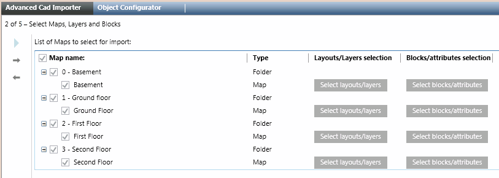
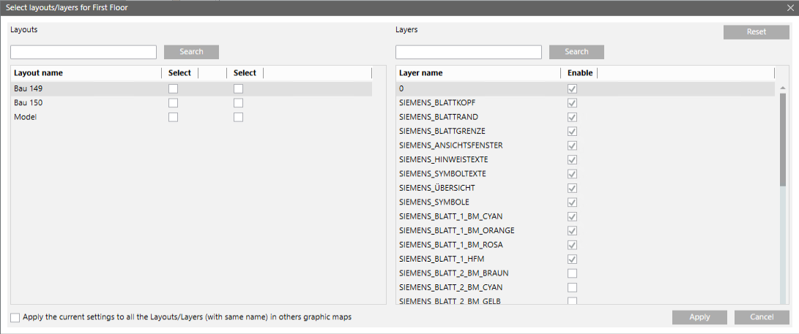

Select the CAD Files, Layouts, and Layers
- You are on page 2 of 5: Select Maps, Layers and Blocks.
- In the List of maps to select for import, select the check box next to the maps you want to import.
- Two pushbuttons become available next to each selected map to select layers/layouts and blocks/attributes.
- Click Select layers/layouts of the first selection.
- The Select layers/layouts for [map name] dialog box displays.
- On the left-hand side, in the List of layouts to select, select the check box next to the layouts you want to import. Choose at least one layout. The tool creates a Desigo CC graphic for each selection.
- On the right-hand side, in the List of layers to enable/disable, select the check box next to the layers you want to include in the import. By default, the layers are selected that correspond to the visibility in the CAD drawings. You can click Reset to go back to the default selections.
- At the bottom, you can select the check box to apply this setting to the same layers and layouts of the selected maps.
- Click Apply.
- If necessary, repeat this procedure from step 2 for the other maps to import.

